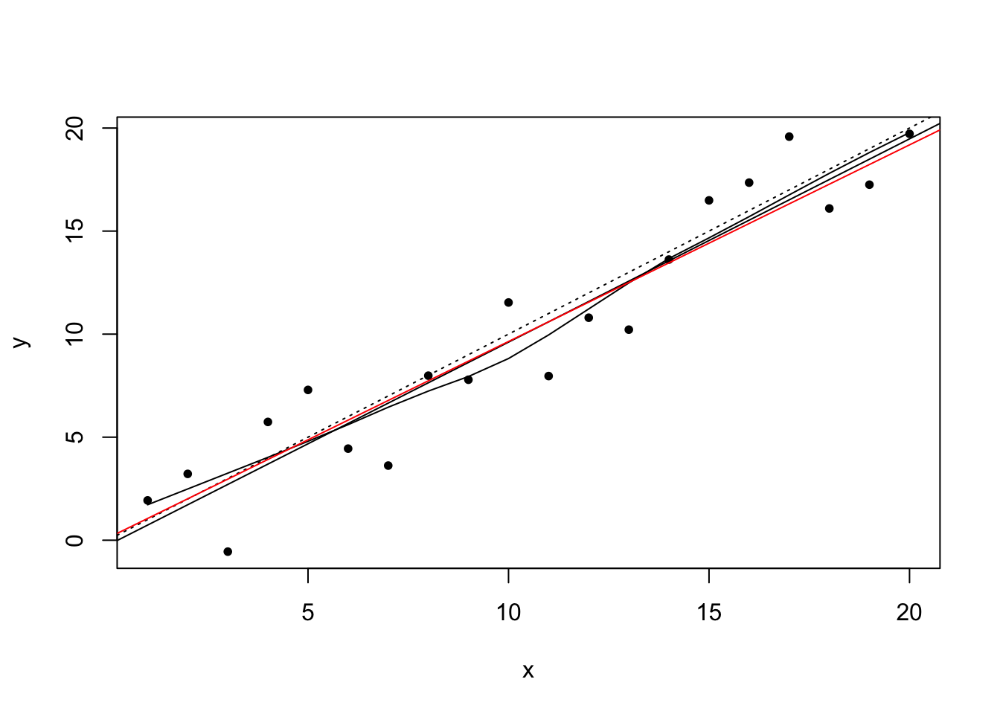
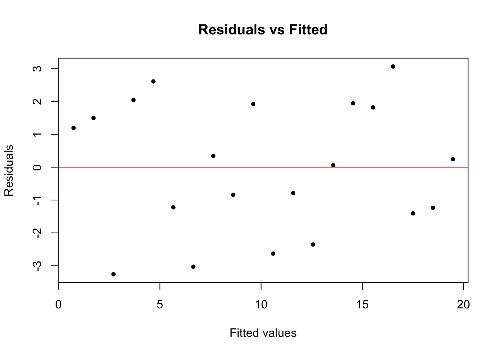
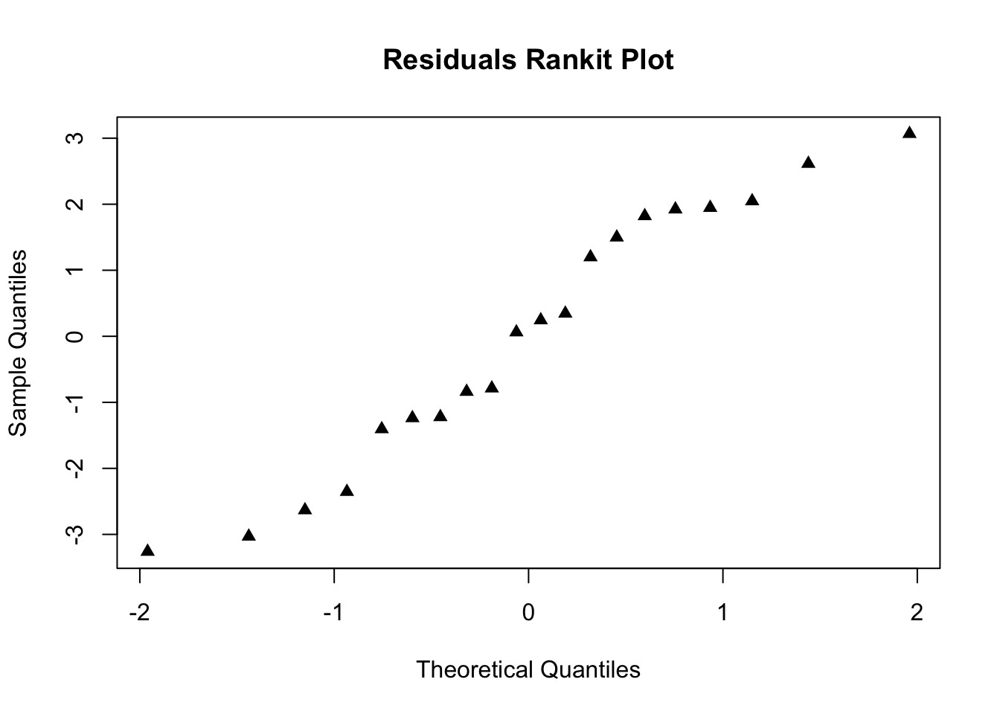
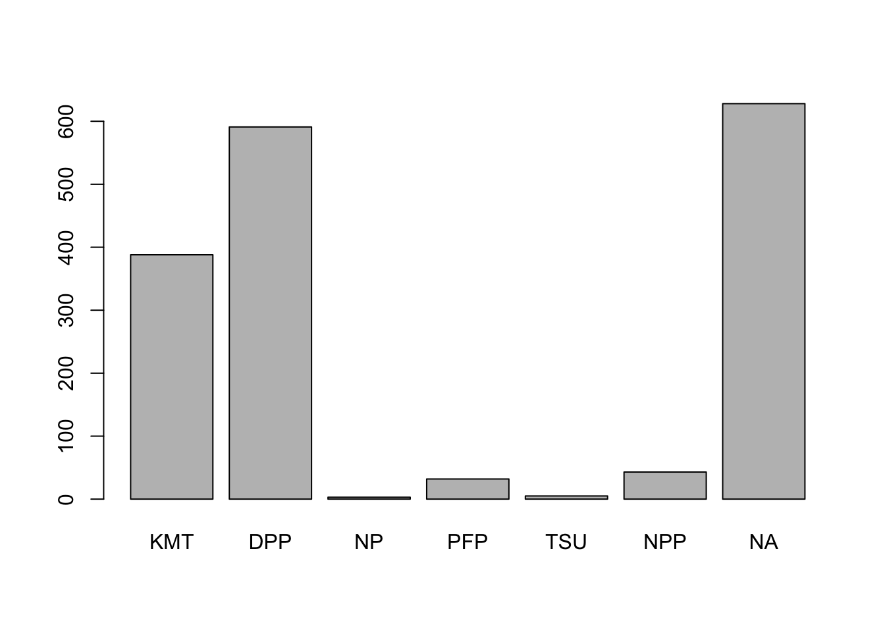

Chapter 3 R Programming R語言程式設計
3.1 什麼是R？
R統計程式語言是一個免費開源軟件包，以John Chambers開發的S語言作為基礎。
3.1.1 R和S的一些歷史
Robert Gentlemen（加拿大）和Ross Ihaka（紐西蘭）將S進一步發展為R。
Figure 3.1: R Inventors
3.1.2 R是：
- 很大，可能是最大的基於用戶編寫的附加組件/程式
- 物件導向
- 互動
- 支持多種作業系統：Windows，Mac，Linux
根據John Chambers（2009）的解釋，R的六個方面包括： 1. 一個具備多種類運算處理流程的功能介面; 2. 互動，容易上手的; 3. 具備功能性的程式模塊; 4. 物件導向，“一切都是物件”; 5. 模組化，由標準化元件製成; 6. 全世界的開源與協做。
Figure 3.2: Prominent R Developers
3.2 為什麼用R？
- 程式設計平台環境
- 允許用戶開發軟體/套件
- 目前，CRAN軟件包存儲庫包含超過14,000個可用套件（截至2019年5月）。
- 圖像化！
- 可擴展和輕便的
- 與其他平台/語言的銜接介面（例如C++，Python，JavaScript，Stan，SQL）
- 比較R與其他軟件？
Figure 3.3: R Compared with other statistical programs/platforms
Source: Oscar Torres-Reyna. 2010. Getting Started in R~Stata Notes on Exploring Data
3.3 RStudio
RStudio是統計程式設計軟體R的使用者介面。 - 物件導向的環境 - 視窗化的使用者介面 - 點擊操作 - 編碼推薦 - 擴張和發展 - 多功能整合開發環境（IDE）

Figure 3.4: RStudio screenshot
3.4 基本操作和賦值
算術運算： +， - ，*，/，^是標準算術運算符。 賦值 要為變數賦值，請使用“< -”或“=”：
## Introduction to R sample program
## file: introR02.R
## Adapted from Venables, W.N., Smith, D.M. and Team, R.C., 2018. An Introduction to R, Version 3.5.1 (2018-07-02)
# Clear any existing objects
rm(list = ls())
# Generate x, y and w to demontrate linear models and plots.
# Make x = (1,2,...,20).
x <- 1:20
# Create A ‘weight’ vector of standard deviations.
w <- 1 + sqrt(x)/2
# Create a data frame of two columns, x and y.
dummy <- data.frame(x=x, y= x + rnorm(x)*w)
# Fit a simple linear regression
# With y to the left of the tilde then x, meaning y being dependent on x.
# Unlike other statistical packages, R does not display all output. It is recommended
# to create an object to store the estimates.
fm <- lm(y ~ x, data=dummy)
# Display the summary of the output of model fm.
summary(fm)##
## Call:
## lm(formula = y ~ x, data = dummy)
##
## Residuals:
## Min 1Q Median 3Q Max
## -4.5715 -1.4442 0.5447 1.0307 3.1091
##
## Coefficients:
## Estimate Std. Error t value Pr(>|t|)
## (Intercept) -1.01131 0.93447 -1.082 0.293
## x 1.11305 0.07801 14.268 2.97e-11 ***
## ---
## Signif. codes: 0 '***' 0.001 '**' 0.01 '*' 0.05 '.' 0.1 ' ' 1
##
## Residual standard error: 2.012 on 18 degrees of freedom
## Multiple R-squared: 0.9188, Adjusted R-squared: 0.9143
## F-statistic: 203.6 on 1 and 18 DF, p-value: 2.967e-11# Use w for a weighted regression.
fm1 <- lm(y ~ x, data=dummy, weight=1/w^2)
# Display the summary of the output of model fm1.
summary(fm1)##
## Call:
## lm(formula = y ~ x, data = dummy, weights = 1/w^2)
##
## Weighted Residuals:
## Min 1Q Median 3Q Max
## -1.8726 -0.4654 0.2188 0.4288 1.1274
##
## Coefficients:
## Estimate Std. Error t value Pr(>|t|)
## (Intercept) -0.37438 0.74485 -0.503 0.621
## x 1.05450 0.07595 13.884 4.66e-11 ***
## ---
## Signif. codes: 0 '***' 0.001 '**' 0.01 '*' 0.05 '.' 0.1 ' ' 1
##
## Residual standard error: 0.8231 on 18 degrees of freedom
## Multiple R-squared: 0.9146, Adjusted R-squared: 0.9099
## F-statistic: 192.8 on 1 and 18 DF, p-value: 4.664e-11# Make the columns in the data frame visible as variables.
attach(dummy)
# Make a nonparametric local regression function.
lrf <- lowess(x, y)
# Standard point plot, with plotting character (pch) as bullet.
plot(x, y,pch=20)
# Add in the local regression.
lines(x, lrf$y)
# The true regression line: (intercept 0, slope 1, with dotted line type )
abline(0, 1, lty=3)
# Unweighted regression line.
abline(coef(fm))
# Weighted regression line.
abline(coef(fm1), col = "red")
# A standard regression diagnostic plot to check for heteroscedasticity. Can you see it?
plot(fitted(fm), pch=20, resid(fm), xlab="Fitted values", ylab="Residuals", main="Residuals vs Fitted")
# How about now?
abline(0,0, col="red") 
# A normal scores plot to check for skewness, kurtosis and outliers.
qqnorm(resid(fm), main="Residuals Rankit Plot", pch=17)
# Cleaning up
rm(list = ls())3.5 實例演示
在本節中，我們將使用2016年台灣選舉與民主化研究計劃的數據作實例演示。台灣選舉和民主化研究（TEDS）是2001年開始的最長和最全面的選舉研究之一.TEDS通過不同的調查模式收集數據，包括面對面面談，電話採訪和網絡調查。有關TEDS的更多詳情，請訪問國立政治大學選舉研究中心網站 https://esc.nccu.edu.tw/main.php.
台灣選舉和民主化研究 2016
# Import the TEDS 2016 data in Stata format using the haven package
## install.packages("haven")
library(haven)
TEDS_2016 <- read_stata("https://github.com/datageneration/home/blob/master/DataProgramming/data/TEDS_2016.dta?raw=true")
# Prepare the analyze the Party ID variable
# Assign label to the values (1=KMT, 2=DPP, 3=NP, 4=PFP, 5=TSU, 6=NPP, 7="NA")
TEDS_2016$PartyID <- factor(TEDS_2016$PartyID, labels=c("KMT","DPP","NP","PFP", "TSU", "NPP","NA"))PartyID (政黨認同變數）:
# Check the variable
attach(TEDS_2016)
head(PartyID)## [1] NA NA KMT NA NA DPP
## Levels: KMT DPP NP PFP TSU NPP NAtail(PartyID)## [1] NA NA DPP NA NA NA
## Levels: KMT DPP NP PFP TSU NPP NA頻率表:
# Run a frequency table of the Party ID variable using the descr package
## install.packages("descr")
library(descr)
freq(TEDS_2016$PartyID)
## TEDS_2016$PartyID
## Frequency Percent
## KMT 388 22.9586
## DPP 591 34.9704
## NP 3 0.1775
## PFP 32 1.8935
## TSU 5 0.2959
## NPP 43 2.5444
## NA 628 37.1598
## Total 1690 100.0000圖表:
# Plot the Party ID variable
ggplot(TEDS_2016, aes(PartyID)) +
geom_bar()We can attend to more detail of the chart, such as adding labels to x and y axes, and calculating the percentage instead of counts.加入細節
ggplot(TEDS_2016, aes(PartyID)) +
geom_bar(aes(y = (..count..)/sum(..count..))) +
scale_y_continuous(labels=scales::percent) +
ylab("Party Support (%)") +
xlab("Taiwan Political Parties")Adding colors, with another theme 加入顏色，設計:
ggplot(TEDS_2016, aes(PartyID)) +
geom_bar(aes(y = (..count..)/sum(..count..),fill=PartyID)) +
scale_y_continuous(labels=scales::percent) +
ylab("Party Support (%)") +
xlab("Taiwan Political Parties") +
theme_bw()Hold on, colors are not right!顏色有對嗎？
ggplot(TEDS_2016, aes(PartyID)) +
geom_bar(aes(y = (..count..)/sum(..count..),fill=PartyID)) +
scale_y_continuous(labels=scales::percent) +
ylab("Party Support (%)") +
xlab("Taiwan Political Parties") +
theme_bw() +
scale_fill_manual(values=c("steel blue","forestgreen","khaki1","orange","goldenrod","yellow","grey"))To make the chart more meaningful, we can use a package called tidyverse to manage the data. 更專業的圖表需要用tidyverse程式包
##install.packages("tidyverse")
library(tidyverse)
TEDS_2016 %>%
count(PartyID) %>%
mutate(perc = n / nrow(TEDS_2016)) -> T2
ggplot(T2, aes(x = reorder(PartyID, -perc),y = perc,fill=PartyID)) +
geom_bar(stat = "identity") +
ylab("Party Support (%)") +
xlab("Taiwan Political Parties") +
theme_bw() +
scale_fill_manual(values=c("steel blue","forestgreen","khaki1","orange","goldenrod","yellow","grey"))3.6 作業
利用以上的範例程式分析統獨(Tondu)變數
Analyze the Tondu (統獨）variable using the following procedures:
- Assign label to each category
- Run a frequency table using descr
- Plot the variable using ggplot2
Hint:提示：
- Prepare the analyze the Tondu variable using these labels: (“Unification now”,“Status quo, unif. in future”,“Status quo, decide later”,“Status quo forever”, “Status quo, indep. in future”, “Independence now”,“No response”)
- Sample codes:
TEDS_2016$Tondu<-factor(TEDS_2016$Tondu,labels=c("Unification now","Status quo, unif. in >future","Status quo, decide later","Status quo forever", >"Status quo, indep. in future", "Independence now","No >response"))